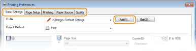
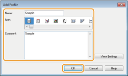
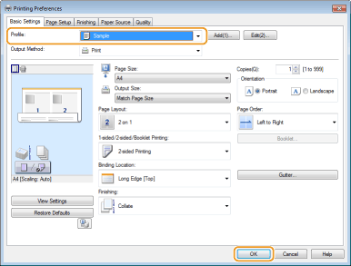

Registering Combinations of Frequently Used Print Settings
Specifying combinations of settings such as "1-sided landscape orientation on Letter size paper in save toner mode" every time you print is time consuming. If you register your frequently used combinations of print settings as "profiles," you can specify print settings simply by selecting one of the profiles from the list. This section explains how to register profiles and how to print using profiles.
Registering a Profile
1
Change the settings that you want to register as a profile, and click [Add].
Make print settings as required on the [Basic Settings], [Page Setup], [Finishing], [Paper Source], and [Quality] tabs. Various Print Settings

2
Enter a profile name in [Name], select an icon, and then click [OK].
As necessary, enter comments about the profile in [Comment].
Click [View Settings] to see the settings that will be registered.

|
|
Editing a profileBy clicking [Edit] on the right side of [Profile] on the screen shown in step 1, you can change the name, icon, or comment of the profiles you have previously registered. However, you cannot edit the pre-registered profiles.
|
Selecting a Profile
Simply select the profile that suits your objective, and click [OK].

|
|
Changing the settings of the currently selected profileYou can change the settings of the currently selected profile. In addition, the changed settings can be registered as another profile.
|